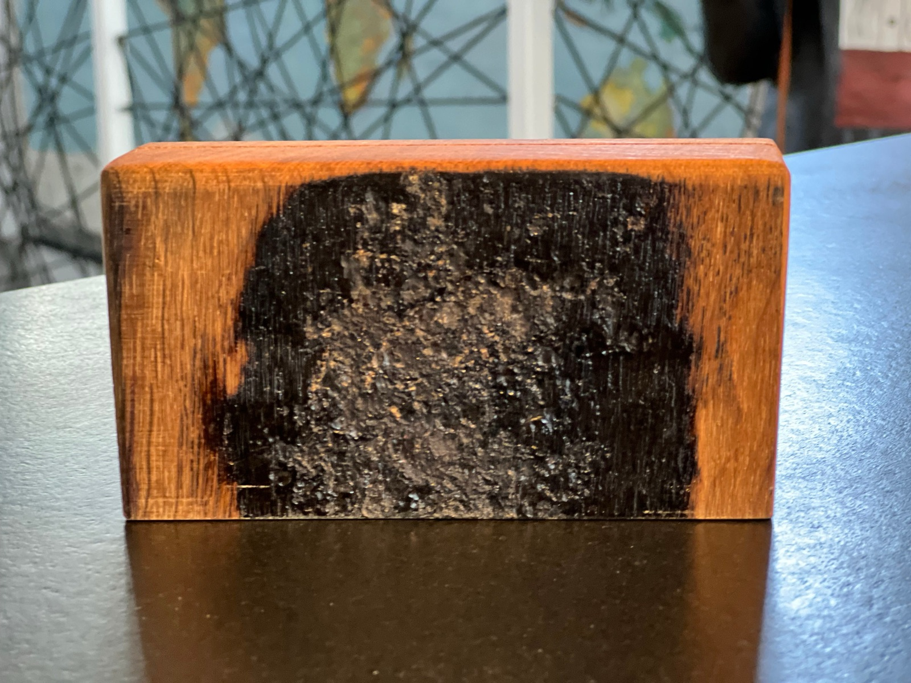
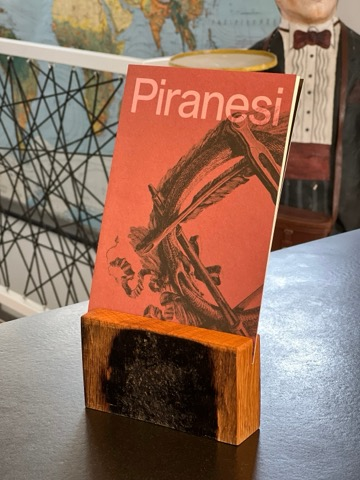
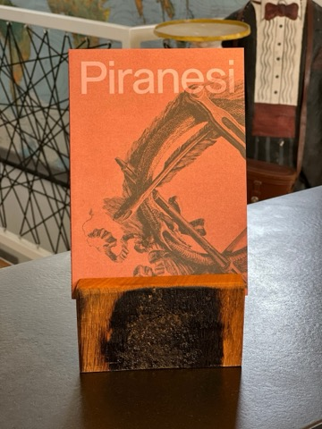
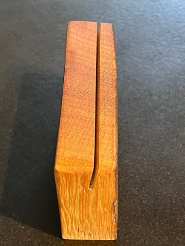
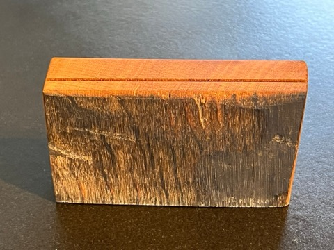

Kartenhalter · Handgefertigtes Unikat
11,90 €
Preis inkl. MwSt.; aufgrund des Kleinunternehmerstatus wird gemäß § 19 UStG die MwSt. in der Rechnung nicht ausgewiesen.
Der kleine Bruder des Kartenhalters XL: ein einzelnes Stück originales Eichenholz aus einer alten Fassdaube – gesägt, geschliffen und geölt. Auf der Innenseite haftet noch der Weinstein, der sich über die Jahre im Weinfass abgelagert hat.
Ein eingesägter Schlitz (ca. 2 mm breit, ca. 15° nach hinten geneigt) hält Foto, Postkarte, Visitenkarte oder Brief.
Holz ist ein Naturprodukt: Wuchs, Farbe, Struktur und Maserung sind bei jedem Baum verschieden. Kleine Lunker, Verfärbungen oder nicht perfekte Kanten sind keine Qualitätsmängel, sondern Teil des Charakters.
Pflegetipp: Das Holz gelegentlich leicht einölen – die Weinsteinablagerung dabei bitte aussparen, sonst wird sie klebrig.